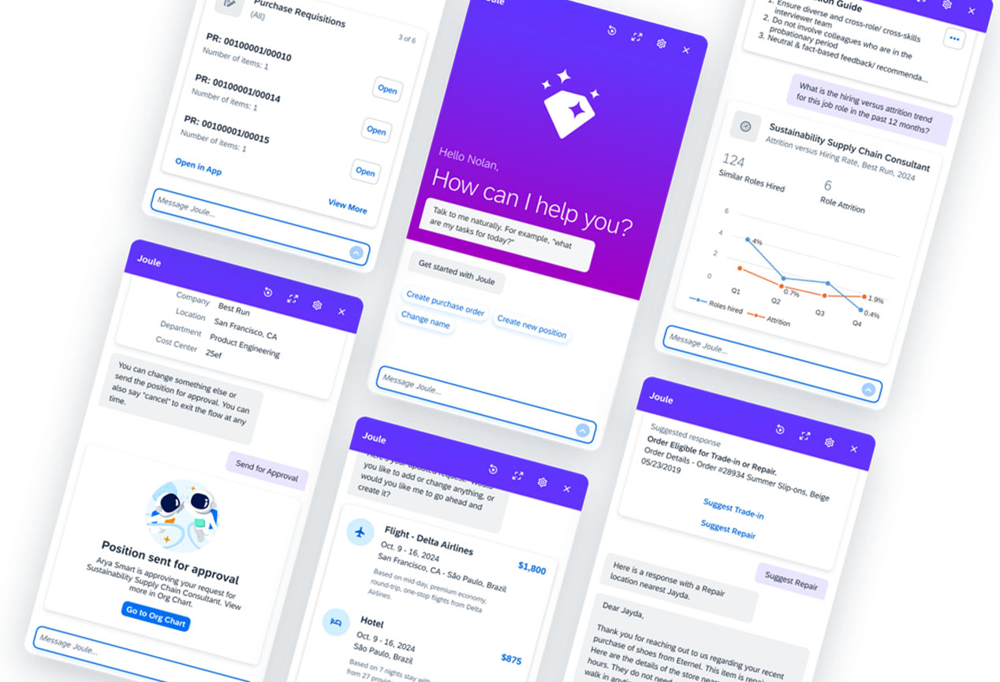

Resolving a design deadlock with n=55 and merging code before the sprint closed
Engineering was blocked by a design debate with no data: a novel Attachment Sheet versus a familiar Input Field pattern. I designed and ran a two-phase mixed-methods study in three weeks, delivered a clear recommendation grounded in user mental models, and unblocked code merge within the active sprint.
Problem
A data-free design debate was blocking engineering. Both options had legitimate advocates, and the wrong call would either confuse new users or frustrate experienced ones.
My Role
Lead researcher. Designed both study phases, ran quantitative and qualitative data collection, made the final recommendation, and independently initiated Phase 2 post-decision.
Input Field selected. Code merged within the sprint. A status state ambiguity issue caught pre-merge. UserZoom protocol adopted as team standard. UI Kit updated.
55
Total participants
1 sprint
Engineering unblocked
0
Post-merge bugs from interaction
Why This Study Needed Two Phases
Both design options had advocates with genuine conviction and no data. A wrong decision carried real costs: confused new users increase support load; frustrated experienced users drive churn. The team needed an impartial data partner, not a tiebreaker with a preference. Starting with quantitative behavioral data before introducing qualitative findings prevented any camp from anchoring interpretation around early qual signal.

The product under test: Joule Mobile — the AI assistant where the attachment interaction lived. Both design options (Attachment Sheet and Input Field) were tested within this interface context.
Research Design
Phase 1: Concept evaluation
n=47 unmoderated (UserZoom): task success and time on task at scale
n=8 moderated IDIs: mental models and the reasoning behind the numbers
A/B preference testing for directional signal
Quantitative data presented first, giving both sides a shared behavioral baseline before qualitative interpretation entered
Phase 2: Component validation (self-initiated)
Targeted usability testing on the Attachment Cell Form post-decision
Surfaced status state ambiguity: users couldn't distinguish uploading, processing, and ready states
UI refined before code merge. The issue would not have been caught in production testing.
Quantitative parity moved the decision to cognitive load
No significant difference in task success or time on task between the two designs. With no performance advantage, the recommendation came down to which option imposed lower cognitive load on first use. Qualitative mental model data became the deciding factor.
2
8/8 moderated users recognized the Input Field pattern from prior AI experience
Enterprise users had already internalized the interaction model from ChatGPT and Copilot. Leveraging an established mental model reduced adoption friction, a high-value signal in enterprise contexts where training time and onboarding capacity are constrained.
3
The status state ambiguity was only visible through follow-on component testing
Users couldn't determine whether a file was uploading, processing, or ready for use. The issue was invisible in Phase 1 concept evaluation. It only surfaced through targeted component testing after the decision was made, demonstrating the value of following findings downstream past the initial decision point.
"I mean, ChatGPT operates the same way. It literally looks like this."
— Enterprise user, recognizing the Input Field pattern on first exposure
Navigating Competing Stakeholder Conviction
The challenge
Both design camps had strong advocates. Positioning as an impartial data partner rather than an arbiter with a preference was a deliberate choice. Quantitative-first sequencing established a behavioral baseline before qualitative interpretation entered, reducing advocacy-driven reading of the qual findings.
Impact
Input Field selected, code merged within sprintZero post-merge bugs from attachment interactionStatus ambiguity caught and resolved pre-mergeUserZoom protocol adopted as team standardUI Kit updated via formal Change Request
Reflection
Run Phase 2 in parallel rather than sequentially
Running component validation after the design decision introduced a small but real delay. In a faster sprint cycle, that gap creates risk. Running Phase 2 as a parallel track would have surfaced the status ambiguity earlier and given the design team more runway before code freeze.